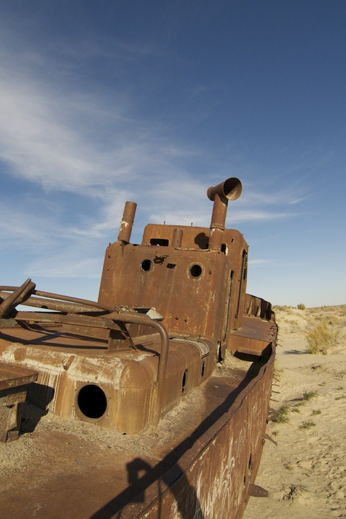
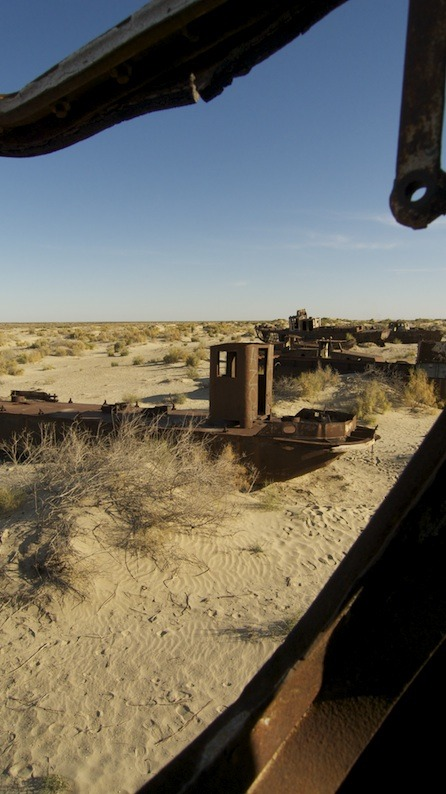
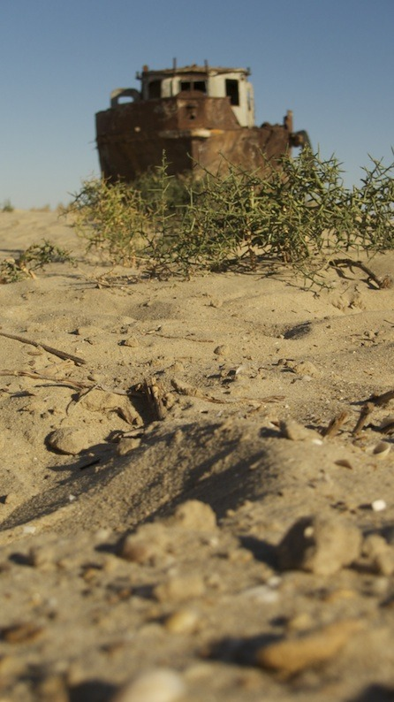
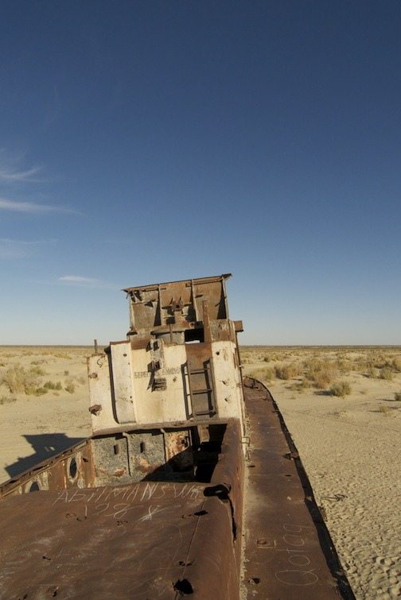

Sat, 14 Aug 2010 10:42:00 · Uzbekistan
aral sea elegy karakalpakstan republic part 2




Aral Sea Elegy, Karakalpakstan Republic - part 2
Moynaq was once a bustling fishing community and Uzbekistan’s only port with tens of thousands of residents. Thanks to the redirection of the Amu Darya river by the former USSR, this small coastal town is now a shadow of its former self, dozens of kilometers from the rapidly receding shoreline of the Aral Sea.